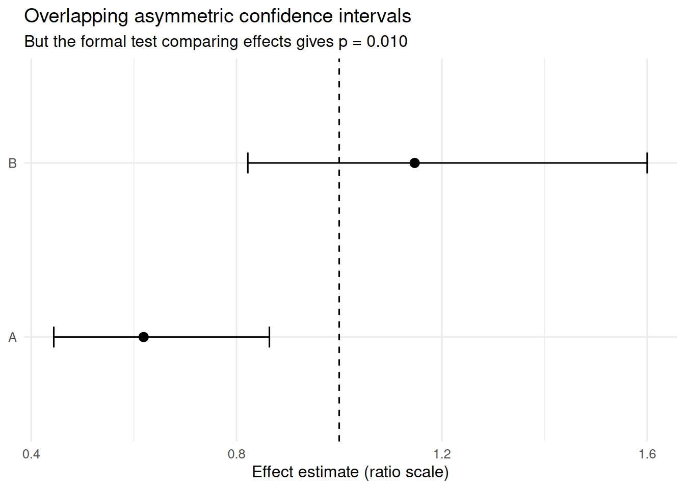

On asymmetric confidence intervals and the limits of inference by eye
Author
Daniel Koska
Published
January 3, 2026
Every once in a while, I come across the same piece of statistical advice:
“Don’t judge differences by whether confidence intervals overlap”.
At first glance, that sounds like one of those annoyingly technical rules statisticians like to repeat without explaining properly. For a long time, I more or less accepted it, but never really sat down to work through why it is true, when it matters, and what exactly goes wrong. This post is my attempt to do that.
Asymmetric confidence intervals are everywhere
Confidence intervals are often asymmetric. This is not some strange edge case. It is completely routine. Think of:
odds ratios
hazard ratios
rate ratios
quantiles
bootstrap(d) intervals
profile-likelihood intervals
These intervals are often perfectly fine. They are computed correctly, reported correctly, and for a single estimate they are usually interpreted correctly. In particular, asking whether such an interval includes the null value is often a perfectly sensible inferential step.
Where things quietly go off the rails
Whether symmetric or not, the overlap between two separate confidence intervals is often used as a visual shortcut for deciding whether two effects differ. But that shortcut can easily disagree with the result of a corresponding statistical test.
The reason is simple: the statistical test does not ask whether two displayed intervals overlap. It asks whether the contrast between the two effects is compatible with zero on the relevant scale, for example whether \(A - B = 0\), whether \(\log(A/B) = 0\), or, in a subgroup analysis, whether an interaction term is zero. That is a different inferential question from ““”do the two displayed intervals overlap”?
Let’s have a closer look at this. Suppose a subgroup analysis reports something like this:
Subgroup A: \(\mathrm{HR} = 0.72\) (95% CI 0.57–0.92)
Subgroup B: \(\mathrm{HR} = 0.92\) (95% CI 0.64–1.31)
\(p_{\text{interaction}} = 0.23\)
Formally, the message is straightforward: there is no convincing evidence that the treatment effect differs between subgroups. Visually, however, the message feels different. One interval excludes 1, the other does not. That creates a strong pull toward a different interpretation, something like:
“Looks like the treatment works in subgroup A, but not in subgroup B.”
That conclusion is very tempting. It is also not what the interaction test says. And this is where the trouble starts. The eye is informally comparing two separate confidence intervals, while the formal analysis is answering a different question.
The key mistake
A confidence interval for effect A and a confidence interval for effect B are not the same thing as a confidence interval for the contrast between them. That contrast might be:
\(A - B\),
\(\log(A/B)\),
or some other difference depending on the model and effect measure.
These are different inferential objects. And this is the real reason why CI overlap is unreliable. Even for symmetric 95% confidence intervals, overlap does not correspond neatly to a 5% test of equality. Once intervals are asymmetric on the displayed scale, the visual shortcut becomes even less trustworthy.
Why asymmetry makes the problem worse
To be clear: asymmetry does not destroy inference. What it destroys is the comforting illusion that inference by eye is geometrically straightforward. Once intervals are asymmetric on the plotted scale, several things become harder to interpret visually:
the point estimate is no longer centered in the interval,
left and right distances no longer mean the same thing,
the apparent distance between intervals depends on the chosen scale,
and overlap is no longer tied to any simple testing rule.
That last point matters a lot.
For ratio measures such as odds ratios or hazard ratios, intervals are often constructed on the log scale and then back-transformed. On the log scale, the interval may be perfectly symmetric. On the original scale, it becomes asymmetric. So even the visual geometry depends on the parameterization. That alone should make us suspicious of the idea that overlap on the displayed scale has some stable inferential meaning. Usually, it does not.
A simple simulation
To make this more concrete, let us simulate a situation in which two subgroup-specific effects are estimated independently.
I simulate two log-effects, as one might obtain from two subgroup analyses. On the log scale, standard Wald inference is straightforward. I then exponentiate the estimates and intervals to obtain ratio measures with asymmetric confidence intervals on the original scale.
The question is: how often do two 95% confidence intervals overlap on the ratio scale even though the formal test comparing the two log-effects is statistically significant?
The key result in Table 1 is Overlap despite significant difference. Here, it is 30.9%. So in nearly one third of all simulated datasets, the two asymmetric confidence intervals overlap even though the formal test indicates a statistically significant difference between effects.
That is not a small technical exception. It means that visual overlap can easily coexist with formal evidence for a difference, so “the intervals overlap” is clearly not a reliable shorthand for “there is no difference”.
The final column, Overlap among significant comparisons, shows the same issue from another angle. Although the formal comparison is significant in 71.1% of simulations, 43.4% of those significant cases still display overlapping confidence intervals. Put differently, even when the data support a difference statistically, the visual impression from the two separate intervals is often ambiguous or misleading.
One plotted example
We can also extract one concrete simulation run where this happens and plot it.
One simulated example with overlapping asymmetric confidence intervals despite a statistically significant difference test.
subgroup
estimate
lower
upper
A
0.619
0.444
0.864
B
1.147
0.822
1.600
Code
ggplot(example_plot_data, aes(x = estimate, y = subgroup)) +geom_point(size =2.8) +geom_errorbar(aes(xmin = lower, xmax = upper),orientation ="y",width =0.12 ) +geom_vline(xintercept =1, linetype =2) +labs(x ="Effect estimate (ratio scale)",y =NULL,title ="Overlapping asymmetric confidence intervals",subtitle =paste0("But the formal test comparing effects gives p = ",formatC(example_p, digits =3, format ="f") ) ) +theme_minimal(base_size =12)

The table presents one concrete simulated dataset in which the two subgroup-specific confidence intervals overlap, even though the formal test comparing the effects is statistically significant. So while confidence intervals can often be interpreted against their null value, they generally should not be interpreted against each other by eye.
That is true in general and it becomes especially important when the intervals are asymmetric on the displayed scale. The more asymmetric the displayed intervals become, the easier it is to forget that the visual comparison is happening on a scale whose geometry may have little to do with the inferential question we actually care about.
What to do instead
If the real scientific question is whether two effects are differ, then the right response is not to stare harder at two separate confidence intervals. Instead, compute one of the following:
a confidence interval for the difference in effects,
a confidence interval for the ratio of effects,
or an explicit interaction test.
In other words: answer the question you actually care about with the inferential object that actually corresponds to it.
Asymmetric confidence intervals do not break inference. But they do break the intuition that visual overlap is telling us something simple. And that is exactly why they deserve a bit more caution than they usually get.
Source Code
---title: "When confidence intervals stop meaning what you think they mean"author: "Daniel Koska"date: 2026-01-03categories: [confidence intervals, inference, visualization]description: "On asymmetric confidence intervals and the limits of inference by eye"format: html: toc: true toc-depth: 2page-layout: article---Every once in a while, I come across the same piece of statistical advice:> "Don’t judge differences by whether confidence intervals overlap".At first glance, that sounds like one of those annoyingly technical rules statisticians like to repeat without explaining properly. For a long time, I more or less accepted it, but never really sat down to work through why it is true, when it matters, and what exactly goes wrong. This post is my attempt to do that.<!-- And, at least for normally distributed means, it’s largely settled science. -->### Asymmetric confidence intervals are everywhereConfidence intervals are often asymmetric. This is not some strange edge case. It is completely routine. Think of:- odds ratios- hazard ratios- rate ratios- quantiles- bootstrap(d) intervals- profile-likelihood intervalsThese intervals are often perfectly fine. They are computed correctly, reported correctly, and for a single estimate they are usually interpreted correctly. In particular, asking whether such an interval includes the null value is often a perfectly sensible inferential step.### Where things quietly go off the railsWhether symmetric or not, the overlap between two separate confidence intervals is often used as a visual shortcut for deciding whether two effects differ. But that shortcut can easily disagree with the result of a corresponding statistical test.The reason is simple: the statistical test does not ask whether two displayed intervals overlap. It asks whether the contrast between the two effects is compatible with zero on the relevant scale, for example whether $A - B = 0$, whether $\log(A/B) = 0$, or, in a subgroup analysis, whether an interaction term is zero. That is a different inferential question from "“"do the two displayed intervals overlap"?<!-- Whether symmetric or not, the overlap between two separate confidence intervals is often examined visually as a shortcut for deciding whether two effects differ. Many times, the result of this shortcut is not compatible with the result of a corresponding statistical test. The statistical test asks whether the difference between the two effects is compatible with zero, for example whether $A - B = 0$, whether $\log(A/B) = 0$, or, in a subgroup analysis, whether an interaction term is zero. That is a different inferential question from "do the two displayed intervals overlap"? --><!-- In addition, the discrepancy described above (between the result of the visual examination and a test result) becomes worse with increasing asymmetry of confidence intervals. --><!-- These intervals are often perfectly fine. They are computed correctly, reported correctly, and for a single estimate they are usually interpreted correctly. In particular, asking whether such an interval includes the null value is often a perfectly sensible inferential step. --><!-- So the problem is not that asymmetric confidence intervals are invalid. The problem starts when we begin to compare them visually. --><!-- ### Forest plots are usually not the problem --><!-- A standard forest plot usually shows an estimate of a contrast — for example a treatment effect — together with its confidence interval. In that setting, checking whether the interval contains the null value is a perfectly legitimate inferential move. That remains true whether the interval is symmetric or asymmetric. So this is not an attack on forest plots. -->Let's have a closer look at this. Suppose a subgroup analysis reports something like this:Subgroup A: $\mathrm{HR} = 0.72$ (95% CI 0.57–0.92)Subgroup B: $\mathrm{HR} = 0.92$ (95% CI 0.64–1.31)$p_{\text{interaction}} = 0.23$Formally, the message is straightforward: there is no convincing evidence that the treatment effect differs between subgroups. Visually, however, the message feels different. One interval excludes 1, the other does not. That creates a strong pull toward a different interpretation, something like:> “Looks like the treatment works in subgroup A, but not in subgroup B.”That conclusion is very tempting. It is also not what the interaction test says. And this is where the trouble starts. The eye is informally comparing two separate confidence intervals, while the formal analysis is answering a different question.### The key mistakeA confidence interval for effect A and a confidence interval for effect B are **not** the same thing as a confidence interval for the contrast between them. That contrast might be:- $A - B$,- $\log(A/B)$,- or some other difference depending on the model and effect measure.These are different inferential objects. And this is the real reason why CI overlap is unreliable. Even for symmetric 95% confidence intervals, overlap does not correspond neatly to a 5% test of equality. Once intervals are asymmetric on the displayed scale, the visual shortcut becomes even less trustworthy.### Why asymmetry makes the problem worseTo be clear: asymmetry does **not** destroy inference. What it destroys is the comforting illusion that inference by eye is geometrically straightforward. Once intervals are asymmetric on the plotted scale, several things become harder to interpret visually:- the point estimate is no longer centered in the interval,- left and right distances no longer mean the same thing,- the apparent distance between intervals depends on the chosen scale,- and overlap is no longer tied to any simple testing rule.That last point matters a lot.For ratio measures such as odds ratios or hazard ratios, intervals are often constructed on the log scale and then back-transformed. On the log scale, the interval may be perfectly symmetric. On the original scale, it becomes asymmetric. So even the visual geometry depends on the parameterization. That alone should make us suspicious of the idea that overlap on the displayed scale has some stable inferential meaning. Usually, it does not.### A simple simulationTo make this more concrete, let us simulate a situation in which two subgroup-specific effects are estimated independently.I simulate two log-effects, as one might obtain from two subgroup analyses. On the log scale, standard Wald inference is straightforward. I then exponentiate the estimates and intervals to obtain ratio measures with asymmetric confidence intervals on the original scale.The question is: how often do two 95% confidence intervals overlap on the ratio scale even though the formal test comparing the two log-effects is statistically significant?```{r message=FALSE, warning=FALSE}library(tidyverse)library(knitr)set.seed(1)n_sim <- 20000# True effects on the log scalemu1 <- log(0.60)mu2 <- log(1.10)# Standard errors of the subgroup-specific log-effectsse1 <- 0.17se2 <- 0.17sim <- tibble( theta1 = rnorm(n_sim, mu1, se1), theta2 = rnorm(n_sim, mu2, se2)) %>% mutate( est1 = exp(theta1), est2 = exp(theta2), l1 = exp(theta1 - 1.96 * se1), u1 = exp(theta1 + 1.96 * se1), l2 = exp(theta2 - 1.96 * se2), u2 = exp(theta2 + 1.96 * se2), overlap = pmax(l1, l2) <= pmin(u1, u2), z_diff = (theta1 - theta2) / sqrt(se1^2 + se2^2), p_diff = 2 * pnorm(-abs(z_diff)), sig_diff = p_diff < 0.05 )summary_table_num <- sim %>% summarise( `Intervals overlap` = mean(overlap), `Formal comparison is significant` = mean(sig_diff), `Overlap despite significant difference` = mean(overlap & sig_diff), `Overlap among significant comparisons` = mean(overlap & sig_diff) / mean(sig_diff) )summary_table <- summary_table_num %>% mutate(across(everything(), ~ paste0(round(100 * .x, 1), "%")))kable(summary_table, align = "cccc")```The key result in Table 1 is **Overlap despite significant difference**. Here, it is 30.9%. So in nearly one third of all simulated datasets, the two asymmetric confidence intervals overlap even though the formal test indicates a statistically significant difference between effects.That is not a small technical exception. It means that visual overlap can easily coexist with formal evidence for a difference, so "the intervals overlap" is clearly not a reliable shorthand for "there is no difference".The final column, **Overlap among significant comparisons**, shows the same issue from another angle. Although the formal comparison is significant in 71.1% of simulations, 43.4% of those significant cases still display overlapping confidence intervals. Put differently, even when the data support a difference statistically, the visual impression from the two separate intervals is often ambiguous or misleading.### One plotted exampleWe can also extract one concrete simulation run where this happens and plot it.```{r message=FALSE, warning=FALSE}example_row <- sim %>% filter(overlap, sig_diff) %>% slice(1)example_plot_data <- tibble( subgroup = c("A", "B"), estimate = c(example_row$est1, example_row$est2), lower = c(example_row$l1, example_row$l2), upper = c(example_row$u1, example_row$u2)) %>% mutate(across(-subgroup, ~ round(.x, 3)))example_p <- example_row$p_diff[[1]]knitr::kable( example_plot_data, align = c("c", "c", "c", "c"), caption = "One simulated example with overlapping asymmetric confidence intervals despite a statistically significant difference test.")ggplot(example_plot_data, aes(x = estimate, y = subgroup)) + geom_point(size = 2.8) + geom_errorbar( aes(xmin = lower, xmax = upper), orientation = "y", width = 0.12 ) + geom_vline(xintercept = 1, linetype = 2) + labs( x = "Effect estimate (ratio scale)", y = NULL, title = "Overlapping asymmetric confidence intervals", subtitle = paste0( "But the formal test comparing effects gives p = ", formatC(example_p, digits = 3, format = "f") ) ) + theme_minimal(base_size = 12)```The table presents one concrete simulated dataset in which the two subgroup-specific confidence intervals overlap, even though the formal test comparing the effects is statistically significant. So while confidence intervals can often be interpreted against their null value, they generally should not be interpreted against each other by eye.That is true in general and it becomes especially important when the intervals are asymmetric on the displayed scale. The more asymmetric the displayed intervals become, the easier it is to forget that the visual comparison is happening on a scale whose geometry may have little to do with the inferential question we actually care about.### What to do insteadIf the real scientific question is whether two effects are differ, then the right response is not to stare harder at two separate confidence intervals. Instead, compute one of the following:- a confidence interval for the difference in effects,- a confidence interval for the ratio of effects,- or an explicit interaction test.In other words: answer the question you actually care about with the inferential object that actually corresponds to it.Asymmetric confidence intervals do not break inference. But they do break the intuition that visual overlap is telling us something simple. And that is exactly why they deserve a bit more caution than they usually get.